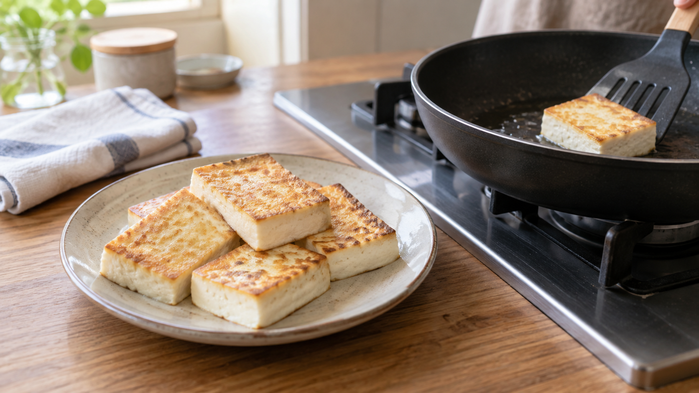

豆腐は軽く押してから焼く｜表面の水分と焼き色
豆腐をフライパンに並べたのに、焼き色が付く前に水が出て、表面が柔らかいままになる。焼く時間だけを延ばせばよいのだろうか。
結論は、木綿豆腐の余分な水を軽く抜き、表面を拭いてから焼くこと。ただし、強く押せば必ずおいしくなるわけではない。水が多く出る状態を減らし、焼く面をフライパンに当てやすくするのが目的だ。
水が残ると、焼く前に蒸発が始まる
熱いフライパンに水分の多い豆腐を置くと、接している面の水がまず温められ、蒸発する。表面がぬれたままだと、焼き色が付くまでに時間がかかりやすい。たんぱく質と糖などが熱で反応し、色や香りを生む変化を「メイラード反応」という。水分と熱のかけ方がこの変化に関わることを、イリノイ大学の食品解説も説明している。
豆腐を押すと内部の水の一部が外へ出る。豆腐の圧搾を調べた研究では、押す強さと時間で排水や食感が変わった。ただし、これは製造工程の研究で、家庭のフライパンで「何分押せば焼き色が何倍付く」と確かめたものではない。
研究で確認された結果と、家庭での考え方
豆腐を焼く方法を比べた研究では、フライパンで焼いた豆腐に香ばしい香りが生じ、調理法によって香りの印象が変わった。つまり、豆腐でも加熱の仕方が仕上がりを左右する。一方、この研究は「焼く前に押した豆腐」と「押さない豆腐」を比べてはいない。
そこで家庭では、押すこと自体を成功の証拠にせず、焼く直前に表面の水を拭くと考えるのが確実だ。軽く押すのは水が続けて出るのを減らすための手段で、焼き色への直接の効果はまだこの資料だけでは言い切れない。柔らかい絹ごし豆腐は崩れやすいので、まずは木綿豆腐で試そう。
焼き豆腐を作る
2人分は木綿豆腐1丁（約300g）、油大さじ1、しょうゆ小さじ2を用意する。しょうゆは焼き上がりに使う。
- 豆腐の水を切り、厚さ約2cmに切る。清潔な布またはキッチンペーパーではさみ、平らな皿と軽い重しを載せて約15分置く。崩れそうなら重しを外す。
- 表面に出た水を新しいペーパーで押さえる。フライパンに油を入れて中火で温め、豆腐を重ならないように並べる。水滴が油へ落ちるとはねるので、置く直前にも表面を確かめる。
- 片面を約3〜4分、動かさず焼く。縁がきつね色になったら返し、反対側も約3〜4分焼く。焼き色が弱ければ、焦げないよう見ながら少し延ばす。皿に盛ってからしょうゆをかける。
別の料理でも、先に見るのは表面
厚揚げを焼き直すときや、きのこを炒めるときも、まず表面に水がたまっていないかを見る。水が多ければ拭く、あるいは鍋の中で水分が飛ぶのを待つ。これは豆腐の研究が他の食材の仕上がりまで保証するという意味ではなく、「焼き色を付けたい面に水が残っているか」を見るための応用だ。
まとめ
木綿豆腐は軽く押し、焼く直前に表面を拭く。まず水の状態を整えてから、焼く時間を調整しよう。